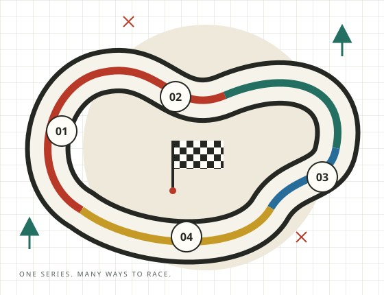

8 Deluxe + its pass
A broad collection of separate courses, adjustable races and five battle rules. The complete 96-course selection needs the Booster Course Pass.
Explore the expanded edition →The series field guide · 1992—2026
New game, expanded edition, familiar track. Follow the series from flat circuits to a connected world—and see what each release actually adds.

This is an overview of official released games, not a track-by-track encyclopedia. The twelve home/mobile editions below are joined by four arcade releases. Recommendations here are editorial judgments based on the documented differences; review scores are kept separate.
A broad collection of separate courses, adjustable races and five battle rules. The complete 96-course selection needs the Booster Course Pass.
Explore the expanded edition →A shared landscape, 24-racer fields, elimination rallies and traversal tricks. A different direction for the series on Switch 2.
Explore the connected world →Two people can share one kart as driver and item user. Its defining mechanic stays distinctive even when its courses return elsewhere.
Explore shared-kart play →Mission Mode offers short tasks and bosses alongside cups. A reason to revisit the actual game beyond recognizing its courses.
Explore the handheld anthology →Bikes, wheelies and distinctive drifting give it its own identity. A later remake of a Wii track uses the later game’s physics.
Explore bikes and tricks →Short, flat courses and very different handling. Super Circuit adds new courses and adapts the SNES layouts without replacing that original.
Explore the flat-track era →The distinction that matters: a sequel changes the game; an expanded edition carries an existing game forward; a returning course brings selected track design into another game’s rules and handling. A console prefix such as “Wii” or “3DS” labels a course’s origin, not the engine you are playing.
[35][11][38]First release means the earliest original commercial launch, with region shown. The separate US date explains apparent year differences—especially Mario Kart 64. Dates for emulation releases and DLC do not replace the original dates. Worldwide launches can cross calendar dates by time zone.
| Game / original system | First release | US release | Relationship | Critics |
|---|---|---|---|---|
| Super Mario KartSuper NES | 27 Aug 1992 Japan[1] | 1 Sep 1992 | New game | —[17] |
| Mario Kart 64Nintendo 64 | 14 Dec 1996 Japan[2] | 10 Feb 1997 | New game | 83[18] |
| Mario Kart: Super CircuitGame Boy Advance | 21 Jul 2001 Japan[3] | 27 Aug 2001 | New game | 93[19] |
| Mario Kart: Double Dash!!GameCube | 7 Nov 2003 Japan[4] | 17 Nov 2003 | New game | 87[20] |
| Mario Kart DSNintendo DS | 14 Nov 2005 North America[5] | 14 Nov 2005 | New game | 91[21] |
| Mario Kart WiiWii | 10 Apr 2008 Japan[6] | 27 Apr 2008 | New game | 82[22] |
| Mario Kart 7Nintendo 3DS | 1 Dec 2011 Japan[7] | 4 Dec 2011 | New game | 85[23] |
| Mario Kart 8Wii U | 29 May 2014 Japan / Mexico[8] | 30 May 2014 | New game | 88[24] |
| Mario Kart 8 DeluxeNintendo Switch | 28 Apr 2017 Worldwide[37] | 28 Apr 2017 | 92[25] | |
| Mario Kart TouriOS / Android | 25 Sep 2019 Worldwide rollout[47] | 25 Sep 2019 | Mobile branch | 59[26] |
| Mario Kart Live: Home CircuitNintendo Switch + camera kart | 16 Oct 2020 Worldwide[51] | 16 Oct 2020 | Physical / AR branch | 75[27] |
| Mario Kart WorldNintendo Switch 2 | 5 Jun 2025 Worldwide[42] | 5 Jun 2025 | New game | 86[28] |
Scores summarize reviewers working in different hardware eras, with different review pools. They are not a scientific ranking across generations. Super Mario Kart has no like-for-like original-release score in this table; Tour’s score is for iOS. Expanded content and later patches generally postdate the reviews.
Each profile gives the change from neighboring releases, the broad critical response, and a reason to revisit the game itself. “Racers” means vehicles in a race, not selectable characters. Linked handheld multiplayer needs multiple systems; it is different from split-screen on one console.
12 editions
All profiles are available below. With JavaScript enabled, this section also supports filtering and side-by-side comparisons.
The tight, technical starting point.
The change. Established the mix of driving, character weight classes, weapons, and Battle Mode. Its compact, repeated-theme tracks and handling feel substantially different from the later 3D racers.
Review consensus. A foundational and highly regarded racer. Retrospective praise emphasizes precise driving and two-player combat; the learning curve and aggressive computer rivals can feel severe today. No comparable original-release Metascore is used here.
Why it still matters. For the origins of the series, or a compact driving challenge that modern track remakes do not reproduce.
The four-player living-room breakthrough.
The change. Replaced the original’s flat, tight circuits with hills, jumps, traffic and larger themed spaces. Expanded couch play from two people to four. Fewer race courses than the SNES game, but a much larger sense of place.
Review consensus. Generally favorable reviews. Multiplayer and Battle Mode drew the strongest praise; solo play and the presentation were less uniformly admired. Its 83 aggregate should not be mistaken for a measurement of its later cultural importance.
Why it still matters. For four-player Battle Mode and the original feel of courses such as Yoshi Valley and Bowser’s Castle.
A new handheld racer with an entire older track set.
The change. Returned to the flat-course visual approach on portable hardware rather than shrinking Mario Kart 64’s 3D tracks. It is an original game with a large returning-course bonus. The SNES layouts run in Super Circuit’s engine; obstacles and coin placement differ.
Review consensus. Universal acclaim at release, with a 93 aggregate: reviewers valued the handling, portable multiplayer and amount of content. That historical score reflects what it achieved on GBA, rather than a guarantee that its handling will suit every modern player.
Why it still matters. For the richest package of the older flat-track style. The SNES courses supplement, rather than replace, the original game.
Two characters, one kart, shared responsibility.
The change. Its defining change is teamwork within each kart: one person can control both characters, or two people can cooperate as driver and item user. Character pairing affects special-item access. The fully 3D presentation and distinct kart choices move well beyond Super Circuit.
Review consensus. Generally favorable reviews, aggregate 87. Multiplayer and the team setup were celebrated, though some critics found the innovation less transformative than expected and the 16-course selection limited.
Why it still matters. For shared-kart co-op and special-item strategy. A returning Double Dash!! course in another game does not bring those systems with it.
A compact anthology with unusually strong solo extras.
The change. Dropped Double Dash!!’s two-person karts and made new-plus-retro cups the standard structure. It introduced Nintendo Wi-Fi Connection racing to Mario Kart. Mission Mode gives solo play a different rhythm from simply clearing cups; advanced snaking rewards repeated mini-turbos.
Review consensus. Universal acclaim, aggregate 91. Reviewers praised the full-featured handheld package, course selection and online breakthrough. The original online service has since closed, so that part of the launch-era praise describes a historical feature.
Why it still matters. For Mission Mode, DS-era courses and its particular drift technique; these are distinct from merely playing DS tracks in Deluxe.
Bikes, tricks and a much busier pack.
The change. Expanded racing from eight to twelve competitors. Tricks and bikes change driving lines and speed management, while optional tilt steering broadens access. Conventional controls remain available. Battle Mode shifts to timed team play rather than the older elimination format.
Review consensus. Generally favorable reviews, aggregate 82. Critics liked the accessible multiplayer and online play but frequently criticized item pileups and the battle changes. The lower aggregate sits alongside a distinctive driving model that explains its lasting enthusiast appeal.
Why it still matters. For the bike physics, wheelies and trick-heavy racing. Later games reuse bikes without reproducing Wii’s exact behavior.
Land, sea and air become one course.
The change. Brought gliding and underwater routes into both new and revisited courses, and introduced the parts-based vehicle customization retained in 8. It reduces the race field from Wii’s twelve to eight and leaves bikes behind.
Review consensus. Generally favorable reviews, aggregate 85. Course design, aerial routes and multiplayer earned praise. Critics also saw a conservative overall package, with fewer solo options and a smaller character selection than Wii.
Why it still matters. For a focused handheld interpretation of the modern formula and the original context of its land/air/water routes.
The anti-gravity template for a very long era.
The change. Added anti-gravity and HD presentation while carrying forward 7’s gliding, underwater driving and customization. Bikes return. The two paid course packs brought 16 additional tracks and crossovers such as Zelda, Animal Crossing and F-Zero-themed courses.
Review consensus. Generally favorable reviews, aggregate 88. Racing and presentation were widely praised; Battle Mode was a conspicuous weakness because it reused long race circuits instead of purpose-built arenas. Launch reviews predate its full DLC selection.
Why it still matters. For the original Wii U implementation and historical interest. Much of its racing content continues in the expanded Deluxe edition.
The 8 family, rebuilt into the broadest circuit collection.
The change. An expanded port of 8: the 48 launch race courses are the Wii U base game plus its DLC, not 48 brand-new circuits. Adds characters, two-item inventory and dedicated battle arenas. The later Booster Course Pass is a separate expansion, adding another 48 courses and eight characters.
Review consensus. Universal acclaim, aggregate 92. Reviews praised the repaired Battle Mode, portable play and refinement of already excellent racing. The 2017 consensus did not assess the 2022–23 pass or the 2026 Switch 2 enhancements.
Why it still matters. For a large curated circuit library and varied battles. Its September 2026 free Switch 2 update improves visuals/loading and enables eight-player split-screen; it remains Deluxe.
A score-chasing mobile branch with a lasting track legacy.
The change. Reworked Mario Kart around mobile sessions and progression rather than a fixed premium console package. Real-world city courses and route variations became its signature contribution; many later reached Deluxe through the Booster Course Pass.
Review consensus. Mixed reviews, aggregate 59 on iOS. Presentation and the recognizable racing were appreciated, while monetization, controls and the launch feature set drew substantial criticism. Paid random pipe pulls were removed in 2022, so launch reviews do not describe the entire service history.
Why it still matters. A historical entry, not a current racing option: Nintendo ended service at 11 p.m. Pacific on 29 September 2026 (30 September in Eastern time). Its adapted tracks survive in other games.
Your floor becomes the race circuit.
The change. A hardware-and-software experiment developed with Velan Studios. You steer a real kart while the screen overlays Mario Kart scenery and effects. Its value depends on the room, floor and willingness to build tracks; it is neither a Tour port nor a conventional successor to Deluxe.
Review consensus. Generally favorable reviews, aggregate 75. Reviewers enjoyed the inventive toy/game combination but found practical limits in floor space, setup and repeated play. It serves a different purpose from the regular console racers.
Why it still matters. For designing physical courses. The 2021 update added two-kart split-screen and a two-to-four-player relay mode using one kart.
The circuit collection opens into a connected world.
The change. A new game with a different race structure. Grand Prix incorporates travel between venues; Knockout Tour eliminates racers at checkpoints; Free Roam opens the shared environment. Compared with Deluxe, it favors traversal and longer routes over an anthology of separate circuits. Returning locations are rebuilt for this world.
Review consensus. Generally favorable reviews, aggregate 86. Critics praised Knockout Tour, presentation and new driving skills; Free Roam rewards and the road-heavy structure were more divisive. This summarizes 2025 reviews, not a scored reassessment of subsequent updates.
Why it still matters. For exploration, traversal skills and elimination races. Updates through September 2026 added rallies, selectable SNES-layout races and spectator options; the racing field remains capped at 24.
No matching games. Clear your search or select a different group.
Review consensus is not the same as a fan ranking. Wii’s 82 and Super Circuit’s 93 describe their critical reception in context. Preferences about handling, nostalgia and competitive play can produce a very different ordering. The “why it matters” notes are this guide’s interpretation, not a survey of every player.
Choose any two home/mobile releases. The profiles and cited edition tables remain the detailed reference.
| Feature |
|---|
The series frequently revisits courses, but that is different from remaking a whole game. Follow the content relationship first, then consider the rules, handling and modes.
An older game runs on another system, usually through emulation. Menus, physics and course selection largely remain those of the original. Save tools or online wrappers may change the surrounding experience.
An existing game becomes a larger or revised package. Deluxe is the key example: recognizable 8 racing plus included DLC, changed mechanics, characters and rebuilt battles.
A selected course is recreated in a later racer. The layout can change and gain gliding or anti-gravity sections. It follows the destination game’s physics, item balance and modes.
May 201432 race courses, twelve-racer fields and anti-gravity. Battles reuse race courses.
2014–15Two paid course packs add 16 races. A separate free update adds 200cc in April 2015.
April 2017Includes those 48 race courses. Adds two-item carrying, assist options, characters and proper battle arenas.
2022–23Another 48 races and eight characters via the separate Booster Course Pass. It requires Deluxe.
Content relationship and update history [8][35][36][38][39]
A further layer: Deluxe on Switch 2. A free update released on 1 September 2026 in the US adds sharper visuals, faster loading, CameraPlay and up to eight people in split-screen on one Switch 2. Original Switch hardware remains at four-player split-screen. CameraPlay is limited to two-to-four-player use. This is an update to Deluxe, not a newly titled sequel or another batch of tracks.
[41][40]| Versions / relationship | What carries over | What the other version does not replace |
|---|---|---|
| Super Mario Kart → Super Circuit | All 20 SNES race layouts are included as unlockable Extra tracks, alongside 20 new ones. | Different handling, rearranged cups, changed coins and reduced original obstacles. Super Circuit is a separate game, not a faithful SNES remake.[11][3] |
| SNES / N64 / GBA classics → later hardware | Virtual Console and Nintendo Classics releases carry the original games forward. Examples include Super Mario Kart, Mario Kart 64 and Super Circuit. | They preserve the older race design. Service features and emulation differ; they do not gain the mechanics or full course sets of newer Mario Karts.[1][2][3][61] |
| Mario Kart DS → Wii U Virtual Console | The DS game, with its dual-screen presentation adapted to Wii U. | The Wii U reissue does not recreate the original DS multiplayer service. It is a route to the DS game’s solo content.[5][13] |
| Mario Kart 8 → 8 Deluxe | The same core racing foundation and all Wii U race courses, including its two DLC packs. | Deluxe revises items, drift boosts, assists and battles. Treat it as an expanded version; preserve Wii U for its original behavior rather than a separate campaign.[35][32] |
| Deluxe → Booster Course Pass | The same game with a larger selectable race library; many courses come from older games and Tour. | The pass is an expansion, not a standalone Mario Kart. It adds no second full game or new set of battle arenas.[38][36] |
| Tour → Deluxe course adaptations | Many city tracks and some other Tour courses were adapted for the pass. | Tour’s score progression, collectible system and touch controls do not transfer with a track.[38][48] |
| 8 Deluxe → World | Familiar item racing, drifting and some returning locations. | World is a separate Switch 2 game: interconnected roads, different traversal, Free Roam and Knockout Tour. Deluxe’s 96-course library and five battle rules do not simply transfer into it.[42][43][33][36] |
In Super Circuit, a SNES layout is driven with GBA handling and altered obstacles. In 7, returning courses were revised around gliding and underwater sections. The recognizable route is only one part of a Mario Kart experience.
[3][15][31]World’s September 2026 update makes ten SNES layouts already present in its environment selectable as standalone races, with flat item panels. That recreates selected layouts inside World; it does not turn World into the complete 1992 game.
[46][45]The Namco / Bandai Namco games are their own branch, built around cabinets, steering wheels and short paid sessions. They are not arcade ports of the similarly timed DS, Wii or 3DS games. Cabinet rollouts vary by territory and operator, so years are safer than a single worldwide date for the early releases.
| Game | Initial release | Identity / relationship | Why it is different |
|---|---|---|---|
| Mario Kart Arcade GP | 2005 US / Japan rollout | The first Namco-developed cabinet game, on Triforce hardware. | Wheel/pedal racing, cabinet camera portraits and Namco guests such as Pac-Man. Establishes this branch’s own courses and item pool.[54] |
| Mario Kart Arcade GP 2 | 2007 Japan first | A follow-up that retains the first GP’s courses and adds more. | Closer to a substantial expansion of GP than a fresh console-style reset. Adds characters, karts, commentary and courses; still a dedicated arcade product.[55] |
| Mario Kart Arcade GP DX | 25 Jul 2013 Japan; US 2014 | A new cabinet generation with HD presentation and different courses/modes. | Gliding and a two-person Fusion Kart mode: one drives while the other shoots. Linked cabinets enable competitive play; regional versions and updates differ.[56][58] |
| Mario Kart Arcade GP VR | 14 Jul 2017 Japan; UK / US 2018 | A venue-based virtual-reality attraction, rather than Deluxe in VR. | First-person racing, tracked hand motions to throw items, and a short themed course. Its attraction format is much narrower than a full console cup collection.[57] |
Arcade date precision: some fan-reference day/month listings for GP and GP 2 are themselves flagged as needing citations. This guide therefore gives their launch years instead of presenting those exact days as settled facts. The later Japanese DX and VR launch dates have cited support.
A game’s original feature list is not a promise that all of its online functions still work. These are official service and edition distinctions checked for this guide’s research date; local multiplayer and offline racing are separate questions.
| Game / group | What to know now | How to interpret older reviews |
|---|---|---|
| Super Mario Kart / 64 / Super Circuit | Reissued in Nintendo Classics libraries. SNES uses the standard Nintendo Switch Online membership; N64 and GBA require Expansion Pack. They remain the older games.[1][2][3][61] | Modern emulation features do not erase their original handling and mode limitations. |
| DS / Wii | Original Nintendo Wi-Fi Connection service ended 20 May 2014. Offline racing and original local multiplayer remain distinct from that closure.[59] | Praise for original online matchmaking describes the service as it worked at the time. |
| 7 / 8 on Wii U | Official 3DS and Wii U online play ended 8 April 2024. Offline play continues; this does not apply to Deluxe’s Switch online service.[60] | A used copy preserves the original local/solo experience, not every network feature. |
| 8 Deluxe | The base game includes 48 race courses. The pass expands this to 96; purchase or qualifying Expansion Pack access supplies the pass. The 2026 Switch 2 update enhances the same game.[38][41] | The 92 aggregate largely concerns the 2017 release, not the complete later package. |
| Tour | Service ended 29 September 2026, Pacific time. A historical entry rather than a currently playable racing alternative.[49] | Launch reviews predate later multiplayer, the 2022 monetization changes and eventual closure. |
| Home Circuit | Needs a real camera kart and space for gates. Two-player split-screen requires two karts; relay play can share one. Multiplayer is local.[51][53][52] | Check whether a review was written before the 2021 multiplayer update. |
| World | Separate Switch 2 game. The latest listed update checked is 1.8.0, US release 9 September 2026: ten selectable SNES layouts, more rallies and spectator options. Still 24 active racers, even in rooms supporting spectators.[45][46] | Its 86 aggregate and the profile’s consensus summarize launch-era criticism, not a fresh 2026 review. |
A useful three-game tour of the series: Super Mario Kart for the original handling, Double Dash!! for the shared-kart experiment, and either Deluxe for the circuit anthology or World for the connected-world direction. Add DS for missions and Wii for its bikes if those features interest you. This is an editorial route through the design changes, not a mandatory play order.
Official Nintendo material supplies edition features, updates and service status. Release histories are cross-checked with specialist references. Metacritic provides a consistent critic-score label; individual reviews explain the recurring praise and reservations.
Checked 24 November 2026. Sources linked in the text use numbered anchors below. Review summaries are paraphrases; “why it matters” and the starting recommendations are editorial synthesis. A score for the original platform is retained even when the game later appeared elsewhere. No prices, sales ranking, ROM guidance or comprehensive character/track lists are intended.
Scope includes all sixteen released game products described above, with Deluxe counted as a separate edition. DLC, free patches, subscription rereleases, Player’s Choice / Nintendo Selects packaging and hardware bundles are not counted as new games. Unreleased prototypes, fan games, mods and theme-park rides are excluded. This is not an exhaustive list of every regional rerelease.
Design: original decorative circuit illustration; DejaVu fonts bundled locally under their included license. No remotely loaded fonts, scripts or images. The shared Waypoints navigation stylesheet is referenced at the required relative path; all guide-specific styling is included in this page. Mario Kart and related names are Nintendo trademarks. This is an independent reference guide.